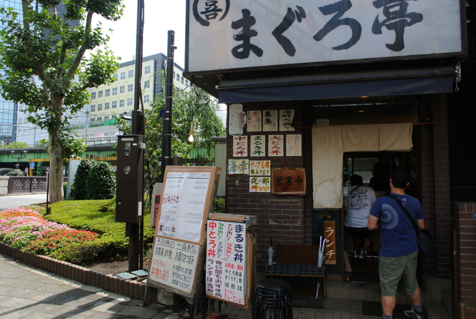

ガッツリ海鮮丼食べてきた。
公開日：

秋葉原で @subsfn とお昼ごはん食べた。 ちょび＆姉ちゃんの『アキバでごはん食べたいな。』 〜「魚がし料理 まぐろ亭」編〜 にも載っているお店で、お店にもマンガのコピーが貼ってあった。

ランチは海鮮丼がメインで、夜にはそのまま居酒屋へ移行するらしい。丼は夜でも食べられるみたいなので、夜の部にいけばよかったかもしれない。前日寝られなくて寝不足だったし。

さっそく、一番高いの（まるき丼 1,500円）注文。ほんとは大トロ丼を頼もうと思ったのだけれど、品切れだったのだそうで。
しかし、まぁ、さすがのボリュームやな。これは満足やで。昨晩からご飯を食べておらずお腹が減っていたので、ぺろりと平らげてしまった。醤油は甘いのと辛いの二種類あって、好きな方を選べるみたい。自分はテキトーに調合して食べてみた。唯一の文句の付け所は、ごはんかな。もう少しモチっとしていればよかった。まぁ、これはその日の炊き加減にもよるのかもしれないけれど。
海辺の町に旅行でもすればもっとリーズナブルに食べられるのだろうけど、それはそれ、これはこれ。都内でガッツリ海鮮丼を食べたいときにはいい選択肢なのかも。